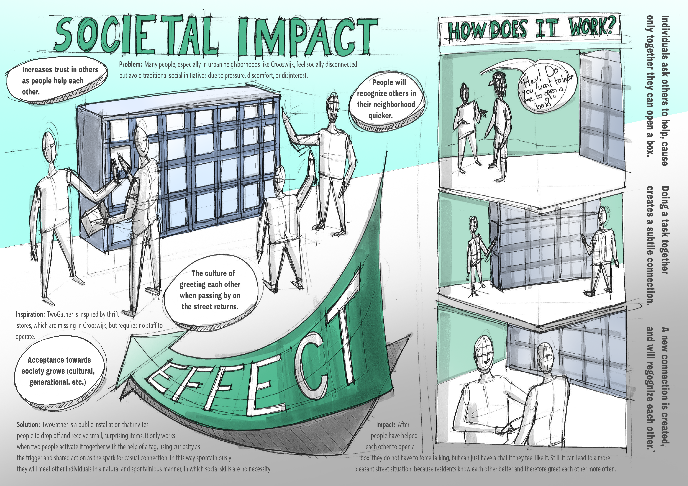

2025 · Designing for Society
Two
Gather.
A public product-exchange wall designed to turn shared help into spontaneous neighbourhood connection.
Connection through
shared action.
TwoGather invites residents to deposit or receive small items through a shared wall. Two people need to activate a compartment together, using curiosity and collaboration as a low-pressure social trigger.
The interaction is designed to help neighbours recognise one another, build trust and make casual conversation more natural.